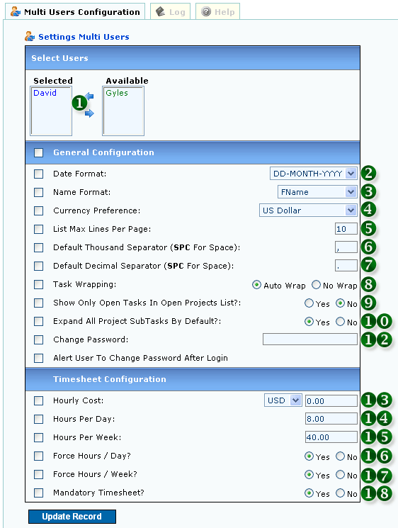

<table class="no-border" cellpadding=3 cellspacing=3>
<tr><td>
	<H1>1. Multiple User Configuration</H1>
	<pre align="left">     
	<strong>Figure 1: Multiple User Configuration</strong></pre>
	<ol>
		<li><strong>1. SELECT USER(S)</strong></li>
		<li><strong>2. DATE FORMATTING PREFERENCE</strong></li>
		<li><strong>3. NAME FORMATTING PREFERENCE</strong></li>
		<li><strong>4. CURRENCY PREFERENCE</strong></li>
		<li><strong>5. MAXIMUM LINES PER PAGE FOR LISTING</strong></li>
		<li><strong>6. THOUSAND SEPARATOR:</strong> Enter 'SPC' for Space</li>
		<li><strong>7. DECIMAL SEPARATOR:</strong> Enter 'SPC' for Space</li>
		<li><strong>8. TASK WRAPPING:</strong> Automatic Task Wrap during Timesheet</li>
		<li><strong>9. ONLY OPEN TASKS SHOWN IN OPEN PROJECTS LIST</strong></li>
		<li><strong>10. PROJECT TREE LISTING EXPANDED BY DEFAULT</strong></li>
		<li><strong>11. CHANGE PASSWORD</strong></li>
		<li><strong>12. ALERT PASSWORD CHANGE</strong></li>
		<li><strong>13. HOURLY COST PER USER</strong></li>
		<li><strong>14. TIMESHEET DEFAULT HOURS PER DAY</strong></li>
		<li><strong>15. TIMESHEET DEFAULT HOURS PER WEEK</strong></li>
		<li><strong>16. FORCE HOURS PER WORKING DAY IN TIMESHEET</strong></li>
		<li><strong>17. FORCE HOURS PER WEEK IN TIMESHEET</strong></li>
		<li><strong>18. MAKE TIMESHEET MANDATORY FOR USER</strong></li>
	</ol>
</td></tr>
</table>